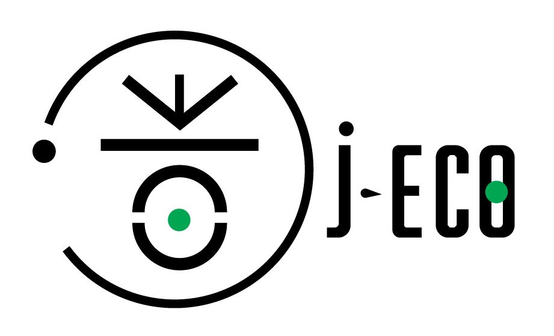

<head>
    
    <nav>
        <div class="row">

            <div class="logo">
                
            </div>

            <div>
                <ul class="linkpage">
                    <a href="/front/index.html" ><li>Accueil</li></a>
                    <a href="/front/template-copy.html"><li>L'empreinte carbone</li></a>
                    <a href="/front/transport.html"><li>Les transports</li></a>
                    <a href="/front/recyclage.html"><li>Le recyclage</li></a>
                    
                </ul>
           
            </div>
        
        </div>
    
    </nav>
</head>